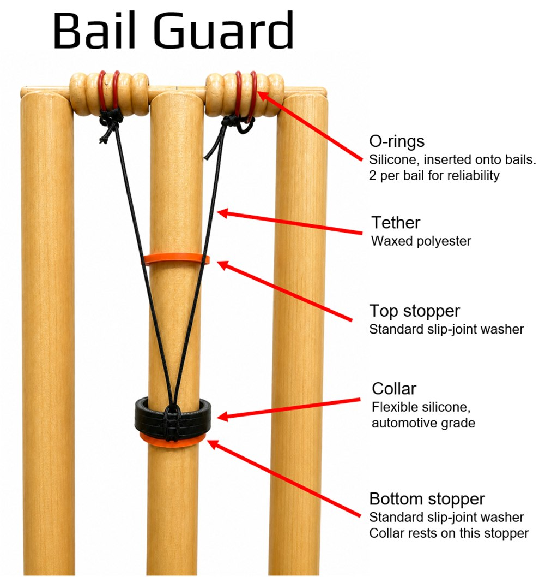
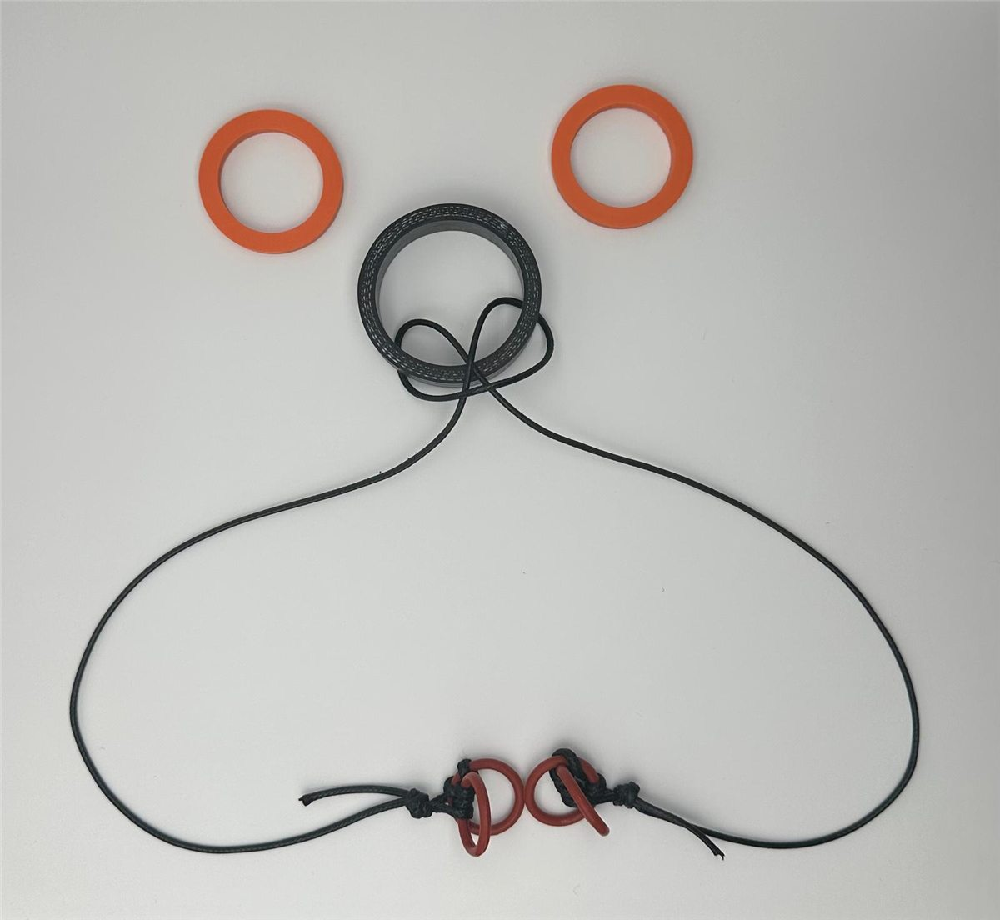

The wicket we play with today is not the one cricket started with. It was redesigned the first time a bowler complained it was unfair, and it has been redesigned again whenever the game found a good enough reason. This is that story, and where ours joins it.
Cricket's Laws are written down for the first time. The wicket is two stumps and a single bail, the stumps 22 inches high and the bail 6 inches across.
At the Artillery Ground in London, Hambledon's John Small faces Kent's Edward “Lumpy” Stevens. Three times Stevens bowls the ball clean through the two stumps without dislodging the bail. The crowd judges it unfair to the bowler. A petition follows, and a third stump is added.
One year before the American Declaration of Independence.The third stump, and the second bail it requires, spread gradually rather than overnight. Two stump wickets carry on in places for years. The shape of the wicket we know today settles into the Laws.
England's wicketkeeper is struck in the eye by a bail in a Sunday League match at Basingstoke. The impact partly shatters the lens in his left eye. The resulting loss of depth perception ends his career six weeks into the following season.
A googly from Imran Tahir hits the stumps in a tour match at Taunton. A bail flies into Boucher's left eye. He loses the lens, iris and pupil, undergoes hours of surgery, and retires from international cricket immediately.
Dhoni is struck near the eye by a bail against Zimbabwe in Harare. Reports at the time call it a lucky escape. The pattern is now hard to ignore: the people closest to the stumps keep getting hit.
The MCC amends the Laws of Cricket to permit devices that limit how far a bail can travel. Law 8.3.4 takes effect on 1 October 2017. For the first time, a bail tether is explicitly legal, subject to the approval of the governing body and the ground.
ESPNcricinfo: MCC amends Laws to protect wicketkeepers from flying bails
Aashi Anup and Anish Anup release the bail guard as a defensive publication on Zenodo, under a Creative Commons licence. Publishing it as prior art means nobody can patent the mechanism later and charge the game for it.

The first competitive games with bail guards fitted, through the GPCC Cup and into league cricket. Umpires fit the device before play and give the feedback that shapes the design: thread lengths, stopper heights, what survives a full day in the wind.
The bail guard is presented at the NTCA banquet, and Star Local Media runs a piece on the project in the Frisco Enterprise.

Dallas Cricket League officially adopts bail guards for its Fall 2026 season. As far as we know, the first league anywhere to do so. Not a trial and not a pilot: standard equipment, on every ground.
Rather than estimating, we count. Every dismissal that dislodges the bails, taken from official league scorecards across adult and youth cricket: 2,582 across 491 games. All of it reproducible from published tools.
About 5.3 wicket impacts in a single game.Dallas Cricket League has publicly backed the initiative. USA Hub in Dallas is adopting bail guards for the fall league. The design is free, the Laws already allow it, and the next step is simply more grounds.